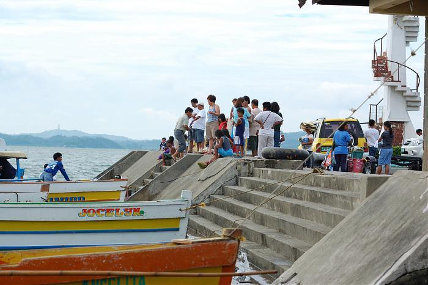
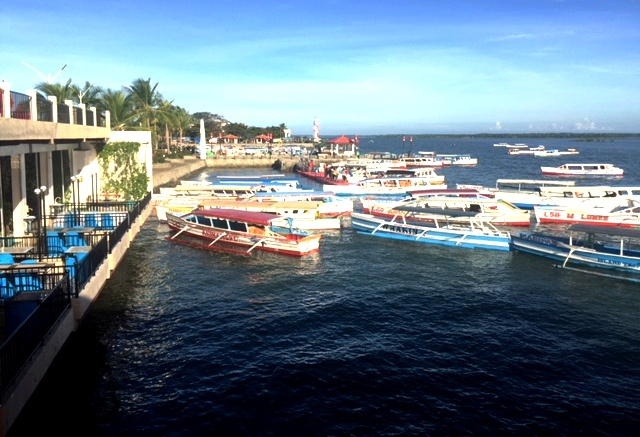

Lucap Wharf is a coastal seaport and public wharf located in Barangay Lucap, Alaminos City, Philippines. It serves as the main gateway to the Hundred Islands National Park, a protected area known for its distinctive cluster of small limestone islands. The wharf is both a transport hub and a popular starting point for local tourism.
Fun Facts
- Lucap Wharf is the main jump-off point for over 100 islands in the Hundred Islands National Park.
- The wharf is often filled with colorful bangka (boats) used by local fishermen and tour operators.
- It’s a popular spot for sunrise photography, as the early morning light reflects beautifully on the water and islands.
Role and Function
Lucap Wharf functions as a dual-purpose harbor, serving both passenger and fishing activities. It is one of Alaminos City’s five seaports and the only one directly linked to island-hopping excursions across Lucap Bay. From here, licensed boat operators ferry tourists to and from the islands, making the port essential to the local economy and tourism industry.
Tourist Amenities

The surrounding area includes a visitor information center, viewing deck, and recreation zone with shops and eateries. Visitors can book boat tours, purchase souvenirs, or enjoy sunset views of the bay and the distant Hundred Islands. Nearby accommodations such as guesthouses and transient lodges cater to travelers spending the night before island trips.
Location and Accessibility

Situated about five kilometers from downtown Alaminos City, the wharf is reachable via a short tricycle or car ride along Lucap Road. Its proximity to major hotels and coastal promenades makes it a central gathering point for both residents and tourists exploring western Pangasinan.
Legend has it that a local fisherman once rowed to a secluded island near Lucap Wharf and discovered an untouched beach with turquoise waters, which eventually became one of the most photographed spots in the Hundred Islands. Today, visitors follow his route to experience the hidden gem firsthand..